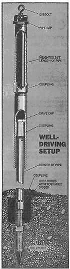
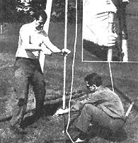
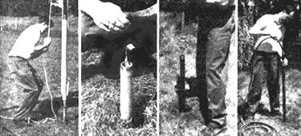
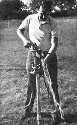

You Can Drive Your Own Well
A little muscle and a little know-how can add up to plentiful water for the homestead.
excerpted from Popular Mechanics
July/August 1970
Several new back-to-the land communes and couples have
asked about low cost methods of drilling a well. Here, from
the April POPULAR MECHANICS, is about the lowest cost
solution to the problem that we know. It won't work for
everyone, but it might for you.
And, to find that vein, we've got a feature coming up on water
witching.
Watch for it!
© 1970 by POPULAR MECHANICS reprinted
by special permission
MANY PEOPLE who own rural and country homes, lake cottages and even suburban homes install their own primary or secondary water-supply systems. If the soil formations permit, driving a well is a relatively easy, and possibly, one-day chore. But to avoid frustration or disappointment, it is wise to check with your state geological survey office before starting. If you submit a legal description (survey) of your property, it will advise you if the conditions in your area are suitable for a well.
Where to drive a well. It is important to locate a well away from any source of contamination such as marshy areas, cisterns, septic tanks and the like. And the well should be situated on higher ground than any of these areas. If a sewer line is present, stay at least 50 ft. away. Also, check with your utility company to make certain that you do not start your well on top of underground service lines. Before beginning construction, check your local building department. In many communities, this work requires a building permit.
Of three basic wellpoint types, one has three sets of holes; round holes or slots in the pipe, a metal screen over the pipe and a jacket with holes over the screen. The second has screen inserts behind holes in the pipe. I chose the third type; a nonclogging point of continuous V-shaped slot design. In addition to being nonclogging, its maker (U.O.P. Johnson Div., 315 N. Pierce St., St. Paul, Minn. 55104) claims it provides four times more open area than other points. The design is available under the Red Head brand name through hardware dealers or by order from Montgomery Ward.
Since it is of double galvanized steel you will not have to worry about galvanic corrosion when it is used with galvanized steel pipe.
Which wellpoint-size opening to use is determined by the sand in which it will operate. Screen-type wellpoints use 60-gauze for coarse sand, 80-gauze for medium and 100-gauze for fine sand. With a nonclog, V-slot wellpoint, use No. 10 slot for all conditions except where the sand is so fine it is practically quicksand; in that event use a No. 6 slot.
Pipe sections five to six ft. long are generally used in driven wells. Make certain you use galvanized pipe and couplings with good clean threads free of defects. Couplings should be of the reamed and drifted (R & D) variety.
These couplings will provide tight joints since they have more threads than conventional couplings. The additional threads help prevent the coupling from becoming loose during driving. They also have a recessed design feature which aids in preventing corrosion of the male pipe threads. The drive shown in the sketch is easiest to construct. Basically, it consists of a length of capped pipe with an inside diameter just large enough to slip over the capped riser pipe. The driver is partially filled with enough lead (lead wool can be used) so that it can be handled by one or, two men.

It is wise to use the best possible equipment. You will need a pump, a wellpoint (1 1/4-in. diameter recommended), lengths of galvanized steel riser pipe, couplings, a drive cap, and pipe-thread compound. Tools include an auger or a post-hole digger, a driving device and pipe wrenches.
A hand-operated pitcher pump is sufficient for driven wells when the water lift does not exceed about 22 ft. at sea level. At 5000 feet above sea level, the limit of water lift is about 20 ft. Pitcher pumps depend upon a partial vacuum to operate; it is essential that all joints be airtight. Pipe compound helps achieve this.
If the water lift in your area is greater than the limits mentioned, a power-driven centrifugal pump and 2-in.-dia. equipment must be used. Normally, 40 ft. is about the limit to which a 2-in. well can be driven with hand tools. A 2-in. well is not only more difficult to drive than a 1 1/4-in. well but, also requires that a 1 1/4-in., drop-pipe (with turned couplings) be permanently installed inside.
Driving can be done with a heavy maul or sledge or with a tripod as shown. Since it is difficult to deliver square, solid blow, with the maul, this is not recommended Glancing blows may break or bend the pipe or strip the threads. Whichever method of driving you decide to use, remember that the riser pipe must be kept perfectly vertical.
The first step is to dig a hole in the ground. The hole can be made with a post-hole digger or hand auger. Here, again, the hole should be vertical and should be dug as deeply as possible to cut down on driving distance.
Assemble the wellpoint, using R & D couplings and pipe-joint compound, to one or more lengths of riser pipe, depending upon the depth of the hole. Fasten a malleable-iron drive cap to the top of the riser pipe. Make certain that all joints are as tight as possible. To avoid breakage of the pipe or splitting of the couplings it is advisable to use pipe wrenches no longer than 24 in.
Insert the assembly into the hole and begin driving. Check frequently to insure that the pipe stays plumb and that the threaded joints remain tight during driving by giving the riser pipe a half turn with a wrench. Always turn to the right, but do not twist the pipe severely. Use the wrench just enough to take up any slack. When the driving tool will no longer strike the cap, add another length of riser pipe.
Pour water into the well, and alongside the drive pipe, at regular intervals. It makes driving easier, and tells when you have reached a water-bearing sand formation. When the wellpoint reaches water-bearing sand, you will notice an increase in the rate of descent of the drive pipe. It can be as much as 6 in. with each blow. When you think the point is in waterbearing sand, pour water into the pipe. If it stays in the point you guessed right. If it drains out, it's back to the driver. If the point is in clay, or other nonwater-bearing material, the water will either remain in the pipe or the drop in water level will be extremely slight.
Another method used to check for water is to lower a weighted line into the pipe. When you've hit water, the wet portion of line lets you know how deep the water stands in the well; the dry portion is a measure of depth from top of well to water level.
In some instances a greater length of the wellpoint can be brought into contact with water-bearing sand by raising or lowering the assembly about 1 or 2 ft.
When the wellpoint is at desired depth, it must be cleaned of sand and muddy water. Cleaning also helps to properly position loose material around the outside of the point which in turn brings the well up to maximum yield ability. Use either method shown ( top of this page ) and then remove the fine sand from the well with a pump. Probably the better purging method is to jet water into the well with a garden hose inserted to the bottom of the well. The dirty water and sand will wash up and out around the hose. Repeat this flushing procedure until no more sand is obtained by pumping
Before final installation of the pump, remove all sand particles from its interior, paying particular attention to the valves and plunger. Before drinking any water, contact your state health department to see if it will test the water for you. If not, use a commercial laboratory. They are listed in the Yellow Pages under "Laboratories, Analytical" or "Laboratories, Testing."
COOL, FRESH WATER is the fruit of your labor. Before drinking, water should be laboratory tested
 TO DRIVE A WELL you need quality equipment shown above. You'll speed up the job by first boring hole with a post-hole digger (above right). A sledgehammer can be used for driving, but a tripod and pulley arrangement (shown at top) saves arms and provides superior driving with less chance of damaging the pipe |
 WITH TRIPOD ERECTED, new section of pipe is added. Notice that two wrenches are used to prevent the bottom section from turning. For smoother driving, coat each of the sections liberally with soap |
 TO DRIVE PIPE, simply raise the weighted section and let it fall (left). Periodically, stop and use a weighted line to test for water level. When the desired water level has been reached clean (purge) the pipe by surging with stick and rags, or with water pressure from hose lowered to the wellpoint tip |
|
 |
 |
|